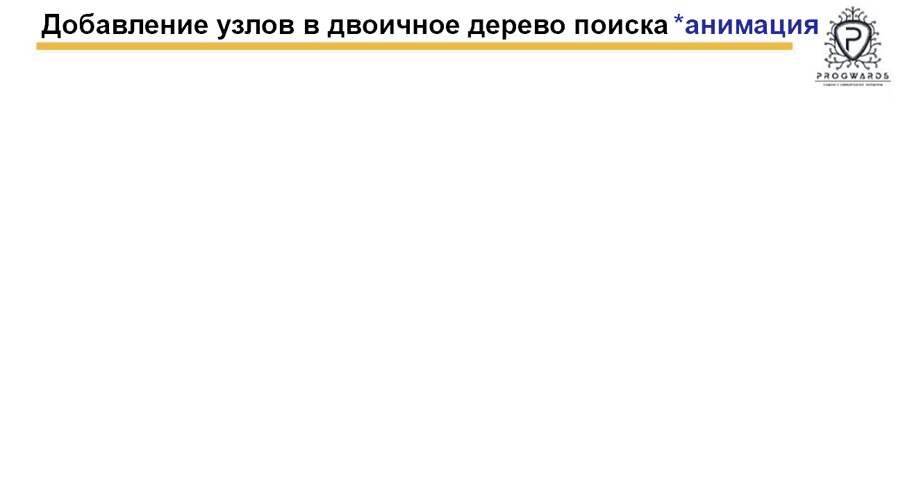

Описание конструкции сайта********************************************

Файл index.html включает в себя:

1a. Верхняя заставка (Header), внутри которой
- Кнопки управления заставкой (скрыть-открыть), меню (скрыть-открыть), в мобильной версии кнопка регулировки размера экрана.
- Название сайта
- Иконка Progwards - компания-автор курсов

2a. Код прелоадера (анимированная эмблема Java). Прелоадер появляется при загрузке сайта, а также при загрузках каждой страницы 
в блок-фрейм.

3a. Блок-меню, где показаны все пройденные темы, каждая из которых включает в себя лекции по теме с подтемами.
При загрузке в дектопной версии меню изначально открыто,
в мобильной версии - изначально скрыто, открывается кнопкой в заставке.
Меню представляет из себя панели с номерами и названиями тем курса.
При клике по панели с темой открываются кнопки с номерами лекций в данной теме, справа от кнопок названия лекций.
Открыть страницу лекции в блоке-фрейме можно двумя способами:
3a.1. При клике по названию лекции (это ссылка на файл лекции) в блоке-фрейме открывается страница лекции, а также ниже открывается панель с подтемами лекции.
3a.2. При клике по кнопке с номером лекции открывается панель с подтемами лекции, в каждой подтеме есть номера рисунков раскрывающих содержание подтемы. 
При клике по названию подтемы (это ссылка на файл лекции с якорями на номерах рисунков) если страница лекции не открыта - она открывается, а также по якорям 
скроллится к картинк-е(ам) с содержанием подтемы и рисун-ок(ки) выделяются цветом границ и номеров. 
При загрузке по умолчанию в меню открыта полностью лекция с подтемами первой темы.
Для оптимизации код меню разбит на темы, и каждая тема размещена в отдельный файл. Файлы тем хранятся в папке thems.
Код из файлов подгружается в блок меню скриптом в нижней части index.html.
(более подробно смотри пункт 2. ниже)

4a. Блок-фрейм, где без перезагрузки сайта открываются страницы с содержанием лекций.
Файлы с кодом всех лекций хранятся в корневой директории.
 
Что представляет из себя страница лекции:
Изначально лекции предоставлены в видеоформате. Каждое видео разбито преподавателем на блоки. В каждом блоке видео на экране демонстрируется слайд
с кодом, рисунком или схемой и преподаватель озвучивает комментарии и выводы по содержанию слайда.
В коде блоки видеолекции заменены отскриненными с видео и отредактированными картинками.
Каждая картинка имеет порядковый номер для удобства навигации.Под картинкой блок текста (не везде), который в основе своей отражает
мысль преподавателя отредактированную в моем понимании. Если на картинке код, то как правило в блоке текста есть ссылка на мой
репозиторий на GitHub откуда этот код можно скопировать. (При работе над каждой видеолекцией я создаю директорию для кода в IntelliJIDEA, 
где его прописываю с последующим коммитом.

5a. Навигация по страницам осуществляется через меню.
Поверх окон (в правом верхнем либо нижнем (в версии для планшета)) есть фиксированная адресная панель с номером и названием лекции, окрытой в блок-фрейме.
Существует несколько видов ссылок:
В меню:
5a.1. Название лекции рядом с кнопкой с номером лекции. Открывает в блок-фрейме страницу лекции.
5a.2. Название подтемы лекции. Если страница данной лекции не открыта в блок-фрейме открывает ее, а также если страница уже открыта далее происходит скроллинг к тем картинкам,
номера которых указаны после названия подтемы. Указанные картинки попадают в область просмотра, а границы и номера страниц при этом выделяются цветом.
На страницах лекций в тексте под картинками:
5a.3. Внешние ссылки на GitHub (на отдельные файлы с кодом либо на директории)), а также на другие внешние ресурсы (подробнее пункты 4.2, 4.3, 4.4)
Открываются (только в дектопной версии) в отдельном окне определенного размера, поверх остального контента.
5a.4. Внутренние ссылки на страницы других лекций (подробнее пункт 4.1). Ссылки открывают страницу в блок фрейме, при этом страница скроллится к картинк-е(ам) на котор-ую(ые) ведет ссылка.
Указанные картинки попадают в область просмотра, а границы и номера страниц при этом выделяются цветом.
При этом на фиксированной адресной панели появляется кнопка-ссылка "Back" с номером перехода ("Back-1"). Если с этой страницы перейти на другую
также по внутренней ссылке кнопка изменится на "Back-2" и т.д. По ссылкам "Back" можно вернуться к странице с исходной ссылкой, при этом
исходная ссылка попадает в область видимости и выделяется цветом.
5a.5. Внешние ссылки на ресурсы, которые открываются стандартно в новом окне (подробнее пункт 4.5). 

Файлы страниц лекции (например "N-00.1 Динамические массивы.html") хранятся в корневой директории сайта.
Код каждой страницы включает в себя:
1b. Блок с кнопками для регулировки размеров при размещении контента страницы в две колонки (т.е. только для дектопной и версии для планшета)
Колонки изначально имеют размер 50/50. Кнопками можно изменять размеры либо правой либо левой колонки с шагом 10. Например при клике на кнопку 50L,
размер левой колонки будет 60 - правой 40 ( а кнопки будут 60L и 40R), далее левой 70, правой 30 и так далее до 100/0.
Таким образом мы можем менять размеры колонок в любом направлении. Это сделано для удобства просмотра контента, особенно мелких деталей на картинках.  
2b. В head при необходимости добавления в лекции подсвеченного кода или gif в рамках поверх картинок есть скрипты для этих целей (подробнее пункт 5.)
3b Остальной контент лекции - картинки, текст, ссылки и т.д.


1. Предзагрузка картинок****************************************

После создания всех html файлов с лекциями в теме:

- с помощью preload-script-html.html выводим в браузере теги всех картинок в теме 
и копируем их в общий файл со всеми тегами картинок сайта - pre-img.html,
- создаем файл для предзагрузки картинок в корне сайта 
(нумерация тем с 0, например, если тема в меню - 9, то файл будет - pre-img8.html),
- копируем в созданный файл pre-img?.html теги с номерами темы из общего файла pre-img.html,
!!! - не забываем добавлять созданный файл pre-img?.html в массивы files (функции setPanelImgPreload() и setAddPanelImgPreload(arr)) в 
preload-img.js(в корне сайта).

этот шаг можно сделать, а можно и нет, надо смотреть работоспособность на реальном хостинге
 - сверяем количество картинок в созданном файле pre-img?.html с таблицей в файле pre-img-count.html,
если надо, перераспределяем излишнее количество по другим файлам и заносим изменения в таблицу


2. Файлы thems с фрагментами меню для каждой темы для подзагрузки в index.html******************

После создания файла theme(двойная цифра номера темы  - 00, 01, 02 и т.д.).html:
Например:
создаем файл theme06.html, в который включается html-код темы (Тема7 "Автоматическая сборка проекта") и лекций, входящих
в тему(Лекция7.1 "Сборка проекта, введение. Ant", Лекция7.2 "Maven, часть1", Лекция7.3 "Maven, часть2" ), а в каждой
лекции есть подтемы привязанные ссылками к номерам соответствущих картинок на странице Лекции в блоке с контентом. 


!!! - не забываем в файле index.html добавить в блоке
<div id="menu" class="block menu">
			<div class="menu-content">
			...
тег <mark id="theme00"></mark>
		<mark id="theme01"></mark>
		<mark id="theme02"></mark>				
		<mark id="theme03"></mark>
		<mark id="theme04"></mark>
		<mark id="theme05"></mark>
Добавляем тег  <mark id="theme06"></mark>, id соответствует названию файла с темой

А ТАКЖЕ добавить название файла в массив themes в скрипте в нижней части index.html
<script>
/*
Fetch API Вставка файлов с темами в меню-контент после тега < mark > с соответствующим названию темы id
*/

let themes = ["theme00", "theme01", "theme02","theme03", "theme04", "theme05", добавляем "theme06"];
let dir = "./thems/";
let ext = ".html";
....
</script>
Скрипт добавляет при загрузке код темы в блок меню


4. Ссылки в html-файлах лекций************************************

4.1 Внутренние ссылки:

Шаблон(данные в шаблоне примерные, обязательно смотреть пояснения):

<p>
	<i class="github-wrap"><i class="fa fa-link"></i>
		<a  class="inner-anchor" href="N-05.1 Тестирование кода, JUnit.html#23" data-target-img="23,24" data-preload="5" target="frame"> 
		Подключение в проект внешних библиотек для работы JUnit</a>
	</i>
</p>

Пояснения:

<p>(обертка обязательна)
	<i class="github-wrap">(обертка обязательна, класс только этот)
		<i class="fa fa-link"></i>(иконка внутренней ссылки)
		<a  class="inner-anchor"(класс только этот) 
		href="N-05.1 Тестирование кода, JUnit.html#23"
		(ссылка с хэшем если нужна конкретная картинка или без если нужна вся лекция) 
		data-target-img="23,25"(атрибут опциональный, нужен если ссылка с хэшем, ставятся номера картинок которые надо подсветить(если несколько - номер первой картинки и через запятую без пробела номер последней картинки, 
		если одна - также через запятую без пробела два одинаковых номера этой картинки))
		data-preload="5"(aтрибут опциональный, ставится номер темы, на которую ведет ссылка для предзагрузки картинок, 
		нужен если ссылка ведет на другую тему(т.е. ссылка находится в теме 6 (06.1, 06.2,...) а ведет в любую другую не под номером 6 (00, 01, 03,...))
		target="frame"(атрибут обязателен)> 
			Подключение в проект внешних библиотек для работы JUnit</a>
	</i>
</p>
	
4.2.Внешняя ссылка на Гитхаб на отдельный файл для открытия в отдельном окне поверх контента:

Шаблон(данные в шаблоне примерные, обязательно смотреть пояснения):

<p onclick="openWin9()">
	<script>
	function openWin9() {
		window.open("https://github.com/valladim-pw/java-level2-lessons/tree/master/src/Less06_BuildingAntProject/Ant2","_blank","toolbar=yes, location=yes, directories=no, status=no, menubar=yes, scrollbars=yes, resizable=no, copyhistory=yes, width=700, height=700");
	} 
	</script>
	* <i class="github-wrap">
		<a class="github"	href="https://github.com/valladim-pw/java-level2-lessons/tree/master/src/Less06_BuildingProject/Ant2">
		Проект Ant2</a>
		<i class="fa fa-github"></i>
	</i>
</p>

<p onclick="openWin--()">
	<script>
	function openWin--() {
		window.open("","_blank","toolbar=yes, location=yes, directories=no, status=no, menubar=yes, scrollbars=yes, resizable=no, copyhistory=yes, width=700, height=700");
	} 
	</script>
	* <i class="github-wrap">
		<a class="github"	href="">---</a>
		<i class="fa fa-github"></i>
	</i>
</p>

Пояснения:

<p onclick="openWin9()">(Надо следить, чтобы числовое занчение в названии функции обеспечивало ее уникальность, т.е. не было двух одинаковых на странице)
	<script>
	function openWin9() {
		window.open("https://github.com/valladim-pw/java-level2-lessons/tree/master/src/Less06_BuildingAntProject/Ant2","_blank","toolbar=yes, location=yes, directories=no, status=no, menubar=yes, scrollbars=yes, resizable=no, copyhistory=yes, width=700, height=700");
	} (функция обязательна для открытия ссылки в отдельном окне определенного размера поверх контента, 
	меняется только адрес ссылки!)
	</script>
	* <i class="github-wrap">
!!!	<a class="github" (класс только этот если нужно открывать ссылку со скриптом window.open() (ссылка с этим классом отключена как ссылка по умолчанию в script.js))
	href="https://github.com/valladim-pw/java-level2-lessons/tree/master/src/Less06_BuildingProject/Ant2">			
	Проект Ant2</a>
	<i class="fa fa-github"></i>(иконка Гитхаба )
	</i>
</p>

4.3.Внешняя ссылка на Гитхаб на директорию для открытия в отдельном окне поверх контента(отличается тегами для иконки):

Шаблон(данные в шаблоне примерные, обязательно смотреть пояснения):

<p onclick="openWin1()">
	<script>
	function openWin1() {
		window.open("https://github.com/valladim-pw/java-level2-lessons/tree/master/src/Less06_BuildingAntProject","_blank","titlebar=yes, toolbar=yes, location=yes, directories=yes, status=yes, menubar=yes, scrollbars=yes, resizable=no, copyhistory=yes, width=700, height=700");
	}
	</script>
	* <i class="github-wrap">
!!!	<a class="github"(класс только этот если нужно открывать ссылку со скриптом window.open() (ссылка с этим классом отключена как ссылка по умолчанию в script.js))
		href="https://github.com/valladim-pw/java-level2-lessons/tree/master/src/Less06_BuildingProject">
		Файлы по теме</a>
		<span class="fwrap"><i class="fa fa-folder"></i><i class="fa fa-github"></i></span>
	</i>
</p>

<p onclick="openWin--()">
	<script>
	function openWin---() {
		window.open("","_blank","titlebar=yes, toolbar=yes, location=yes, directories=yes, status=yes, menubar=yes, scrollbars=yes, resizable=no, copyhistory=yes, width=700, height=700");
	}
	</script>
	* <i class="github-wrap">
		<a class="github"	href="">
		Файлы по теме</a>
		<span class="fwrap"><i class="fa fa-folder"></i><i class="fa fa-github"></i></span>
	</i>
</p>

Пояснения:

<p onclick="openWin1()">
	<script>
	function openWin1() {
		window.open("https://github.com/valladim-pw/java-level2-lessons/tree/master/src/Less06_BuildingAntProject","_blank","titlebar=yes, toolbar=yes, location=yes, directories=yes, status=yes, menubar=yes, scrollbars=yes, resizable=no, copyhistory=yes, width=700, height=700");
	}
	</script>
	* <i class="github-wrap">
!!!<a class="github" (класс только этот если нужно открывать ссылку со скриптом window.open() (ссылка с этим классом отключена как ссылка по умолчанию в script.js))
	href="https://github.com/valladim-pw/java-level2-lessons/tree/master/src/Less06_BuildingProject">
	Файлы по теме</a>
	<span class="fwrap"><i class="fa fa-folder"></i><i class="fa fa-github"></i></span>(теги для иконки с папкой на Гитхабе)
	</i>
</p>
	
4.4.Внешняя ссылка на любой ресурс для открытия в отдельном окне поверх контента:
	
Также как в п.2 только не нужна иконка Гитхаба
Шаблон(данные в шаблоне примерные, обязательно смотреть пояснения):	
	
<p onclick="openWin5a()">
	<script>
	function openWin5a() {
		window.open("https://www.w3schools.com/xml/xml_whatis.asp","_blank","toolbar=yes, location=yes, directories=no, status=no, menubar=yes, scrollbars=yes, resizable=no, copyhistory=yes, width=700, height=700");
	}
	</script>
!!!* <a class="github"(класс только этот если нужно открывать ссылку со скриптом window.open() (ссылка с этим классом отключена как ссылка по умолчанию в script.js))
	href="https://www.w3schools.com/xml/xml_whatis.asp">
	Подробнее о XML</a></br>
</p>

<p onclick="openWin--()">
	<script>
	function openWin--() {
		window.open("","_blank","toolbar=yes, location=yes, directories=no, status=no, menubar=yes, scrollbars=yes, resizable=no, copyhistory=yes, width=700, height=700");
	}
	</script>
	* <a class="github"	href="">--</a></br>
</p>	

4.5.Внешняя ссылка на любой ресурс для открытия в другой вкладке(по стандарту):

!!!Любой класс, кроме github, или без класса	
	
<p>			
	* <a class=" " href="https://mvnrepository.com/search?q=plugin&c=maven-plugins&p=1">			
	Maven Plugins</a>
</p>
	

5. Код и картинки с разрешением .gif(возможно и другое) внутри картинок в html коде лекций************************************

Файлы для добавляния ( и с кодом, и картинки в любом расширении) хранятся в корневой директории в папке code 
в подпапках с номером лекции.

Например, лекция "N-08.1 Бинарные деревья, АВЛ-деревья.html", подпапка будет code/code_08.1
лекция "N-08.2 Красно-черные и splay-деревья.html", подпапка будет code/code_08.2

!!! Важно В названии файлов обозначается номер картинки (в коде это последняя цифра в названии картинки), на которой будет вставлен файл
Например, картинка 08.1.1.png - номер 1,
вставки будут или "code01.txt", или "gif01.gif", или "img01.png" (в зависимости от содержания вставки - код, gif, картинка)
!!! Если в одной картинке две вставки, тогда "code01a.txt" и "code01b.txt" либо "code01a.txt" и "gif01b.gif"
картинка 03.3.10. - номер 10
вставки будут или "code10.txt", или "gif10.gif", или "img10.png"
Если в одной картинке две вставки, тогда "code10a.txt" и "code10b.txt" либо "code10a.txt" и "gif10b.gif"

!!! Обязательно - id элемента, оборачивающего вставку в html должен совпадать с названием файла (без расширения)
файл "code01.txt" - <div id="code01" class="code-wrap">
файл "code10.txt" - <div id="code10" class="code-wrap">
файл "gif10.gif" - <div id="gif10" class="code-wrap">
файл "img03.png" - <div id="img03" class="code-wrap">

!!! Обязательно - все названия файлов вставок на странице лекции должны быть в составе 
массива в скрипте внутри <head> лекции, желательно отсортированы по номерам в названии (но не критично)
<script>
....
let code = ["code01.txt", "code03a.txt", "gif03b.gif", "gif08.gif", "code23.txt"];
....
</script>
5.1 Файл с кодом - это просто нужный код в формате txt

!!! Код копируем из IntelliJ IDEA, размещаем в файле, 
а файл в нужной директории в корне сайта (см. 5.2)

Например, code03.txt:

public class Main {
 public static void main(String[] args) {
  Tree tree = new Tree();

  tree.insertNode(6);
  tree.insertNode(9);
  tree.insertNode(5);
  tree.insertNode(7);
  tree.insertNode(3);
  tree.insertNode(1);
  tree.insertNode(10);
  tree.insertNode(8);
  tree.insertNode(4);
  tree.insertNode(2);
  tree.printTree();
  tree.deleteNode(6);
  tree.printTree();
  System.out.println("Delete: " + tree.deleteNode(6).toString());
  tree.findNode(10);
  tree.findNode(12);
 }
}
 

5.2 Скрипт для добавления находится в начале лекции, в которой есть необходимость такого добавления.

Функция для регулировки размеров и положения рамки поверх картинки setCode(init) находится 
javascript/script.js

Например, скрипт в начале html-файла лекции "N-08.1 Бинарные деревья, АВЛ-деревья.html"
<script>
		/*
		Fetch API Вставка файлов с кодом 
		*/
!!! имя файла надо обязательно внести в массив
		
		let code = ["code01.txt", "code02.txt", "gif01.gif", "gif02.gif", "gif03.gif"]; 

!!! не забыть поменять имя подпапки в соответствии с номером лекции			
		
		let dir = "./code/code_08.1/";			

		for (let c in code) {
			let file = dir + code[c];
			getContent(file);
		}

		async function getContent(file) {
			let ext = file.substr(file.lastIndexOf(".") + 1);
			let x = await fetch(file);
			let txt = await x.text();	
			let code_wrap = document.querySelectorAll(".code-wrap");
			let arrTab, arrSign, arrGap;
			
			for (let i = 0; i < code_wrap.length; i++) {
				let id = code_wrap[i].getAttribute("id");
				let code_tag = code_wrap[i].querySelector("code");
				let pos = file.search(id);		
				if (pos != -1) {
					if (ext == "txt") { 
						
	// если файл с кодом (например - "code14.txt"), в нем убирается лишняя табуляция и пробелы в начале каждой строки,
						а также меняется "<" на  "&lt;" для корректного отражения кода на странице
					
						arrTab = txt.match(/\t/g); 
						arrSign = txt.match(/</g);								
						
						if (Array.isArray(arrSign) && arrSign.length !== 0) {							
							txt = txt.replaceAll("<", "&lt;");														
						}
						
						if (Array.isArray(arrTab) && arrTab.length !== 0) {
							txt = txt.replaceAll("\t", " ");														
						}
						// если вместо \t используется два пробела,  функция заменяет каждые два пробела в начале строки на один
						txt = txt.replace(/^( *)/gm, (_, spaces) => spaces.replace(/  /g, " "));

		// добавляются кнопки для копирования кода в буфер обмена
						
						if (id.search("a") != -1)
							code_wrap[i].insertAdjacentHTML("beforebegin", "<i class=\"material-icons but-gif but-copy\" onclick=\"copyCode(event)\" style=\"right:50%;\">content_copy</i>" ); 
						else	
							code_wrap[i].insertAdjacentHTML("beforebegin", "<i class=\"material-icons but-gif but-copy\" onclick=\"copyCode(event)\" >content_copy</i>" );
						
						code_tag.innerHTML = txt;
						
					}	else if (ext == "gif") {
					
		// если файл - картинка gif, добавляются кнопки для запуска и паузы.
					
						code_wrap[i].innerHTML = "<i class=\"material-icons but-gif pause-gif\" onclick=\"pauseGif(event)\">pause_circle_outline</i>" +
						"<i class=\"material-icons but-gif start-gif\" onclick=\"startGif(event)\">play_circle_outline</i>" + 
						"";	
					} else
						code_wrap[i].innerHTML = "";
				}						
			}		
		}

// Здесь же скрипт для копирования кода в буфер обмена
// Код берется из файла с кодом в директории dir, название которого соответствует 
// id тега с классом "code-wrap", рядом с которым находится кнопка для копирования
	
	async function copyCode(event) {
		let e = event.target;
		let code_wrap = e.nextSibling.nextSibling;
		let copy_msg = e.nextSibling;
		let code_id = code_wrap.getAttribute("id");
		let file = dir + code_id + ".txt";		
		
		let x = await fetch(file);
		let copy_text = await x.text();
		
		navigator.clipboard.writeText(copy_text);
		
		removeClass(copy_msg, "msg-hide");
		setTimeout(function(){ addClass(copy_msg, "msg-hide") }, 3000);
	}	
	</script>
// скрипт для подсветки кода
	<script src="javascript/highlight.min.js"></script>
// скрипт для нумерации строк в коде	
	<script src="javascript/highlightjs-line-numbers.js"></script>

5.3 Для добавления кода в рамке внутри картинки под нужной картинкой добавляем код:
 
 5.3.1. Если НЕ НУЖНА рамка для кода внутри картинки, а нужна только кнопка 
 для копирования кода, обозначенного на картинке:
 <div class="column">
		<span class="badge bg-primary">Рис.11&nbsp;<i class="material-icons">&#xe5db;</i></span>
		
!!! Добавляем в тег класс "code-null"
		<div id="code11" class="code-wrap code-null"> 
			<pre><code class="hljs language-java"></code></pre>
		</div>
		
 5.3.2. Кнопка "Copy"(для копирования кода из соответствующего файла) будет отражаться если в
 обертке с классом "code-wrap" НЕТ класса "code-test":
  <div class="column">
		 <span class="badge bg-primary">Рис.11&nbsp;<i class="material-icons">&#xe5db;</i></span>
		 
!!! Если нет класса "code-test" в рамке появится кнопка "Copy"
она запускает копирование в буфер обмена файла code11.txt (в данном случае)
		<div id="code11" class="code-wrap code-null"> 
			<pre><code class="hljs language-java"></code></pre>
		</div>
	5.3.3. Кнопка "Run"(для копирования кода в буфер обмена и открытия окна https://www.w3schools.com/java/tryjava.asp?filename=demo_helloworld
	здесь можно запустить код и увидеть результат компиляции и выполнения) будет отражаться если в
 обертке с классом "code-wrap" ЕСТЬ класс "code-test":
  <div class="column">
		 <span class="badge bg-primary">Рис.11&nbsp;<i class="material-icons">&#xe5db;</i></span>
		 
!!! Если есть класс "code-test" в рамке появится кнопка "Run"
она запускает копирование в буфер обмена файла code14.txt (в данном случае),
также откроется окно https://www.w3schools.com/java/tryjava.asp?filename=demo_helloworld,
в котором можно запустить скопированный код,
также откроется еще одно малое окно с инструкцией как запустить код (оно автоматически закрывается через установленное в коде время)
javascript/script.js?, function openW3Schools(event)
		<div id="code14" class="code-wrap code-null"> 
			<pre><code class="hljs language-java"></code></pre>
		</div>	
	
 5.3.4. Две рамки с кодом одинакового размера:	
	<div class="column">
		<span class="badge bg-primary">Рис.11&nbsp;<i class="material-icons">&#xe5db;</i></span>
		
!!! Важно id должен совпадать с именем файла id="code01" - code01.txt
	class="code-wrap" - обязательный класс
		<div id="code11a" class="code-wrap">
	class="hljs language-java" - обязательный, нужен для подсветки кода в стиле IntelliJIDEA	
			<pre><code class="hljs language-java"></code></pre>
		</div>
		<div id="code11b" class="code-wrap">
			<pre><code class="hljs language-java"></code></pre>
		</div>
		<p>
		...............
		</p>
	</div>
 5.3.5. Одна рамка с кодом во всю ширину картинки:	
	<div class="column">
		<span class="badge bg-primary">Рис.11&nbsp;<i class="material-icons">&#xe5db;</i></span>
		
		<div id="code11" class="code-wrap"> 
			<pre><code class="hljs language-java"></code></pre>
		</div>	
		<p>
		...............
		</p>
	</div>
 5.3.6. Одна рамка определенной ширины и с определнным положением:	
	<div class="column">
		<span class="badge bg-primary">Рис.11&nbsp;<i class="material-icons">&#xe5db;</i></span>
		
		<div id="code11" class="code-wrap" data-pos="030"> 
			<pre><code class="hljs language-java"></code></pre>
		</div>	
		<p>
		...............
		</p>
	</div>	
	Ширина и положение рамки регулируется атрибутом	data-pos:

	Значения:
	"030" - рамка в 2/3 ширины картинки посередине
	"03" - рамка в 2/3 ширины картинки в левой части
	"30" - рамка в 2/3 ширины картинки в правой части
	"020" - рамка в 1/2 ширины картинки посередине
	"02" - рамка в 1/2 ширины картинки в левой части
	"20" - рамка в 1/2 ширины картинки в правой части	

5.4 Добавление результата вывода кода на консоль

- Результат работы кода копируется из консоли включая первую строку с параметрами

!!! строка сокращается до вида (в конце поставить "..."):
"C:\Program Files\Java\jdk-15.0.2\bin\java.exe..."

а также обязательно последнюю строку о завершении кода
Process finished with exit code 0

в текстовый файл, например "code05.txt"	

- Добавляется в лекцию теми же способами, что и код (5.3.4, 5.3.5, 5.3.6)

- !!!Отличается только тем, что в классе обертки добавляется класс "console"

		<div id="code07" class="code-wrap console" data-pos="030"> 
			<pre><code class="hljs language-java"></code></pre>
		</div>
5.5 Добавление результата cmd(командной строки)

- Результат копируется из командной строки в текстовый файл, например "code05.txt"	

- Добавляется в лекцию теми же способами, что и код (5.3.4, 5.3.5, 5.3.6)

- !!!Отличается тем, что в классе обертки помимо класса "console" добавляется класс "shell"


		<div id="code07" class="code-wrap console shell" data-pos="030"> 
			<pre><code class="hljs language-java"></code></pre>
		</div>		
	
5.6 Добавление gif или картинки с другим расширением в рамке внутри картинки.

- Размеры картинки с расширением png:
рамка в полную ширину - холст 1200 Х 540 картинка ширина макс. 1180, высота макс. 520
рамка в 2/3 ширины картинки - холст 1000 Х 660 картинка ширина макс. 980, высота макс. 640 
рамка в 1/2 ширины картинки - холст 843 Х 750 картинка ширина макс. 820, высота макс. 730


- gif лучше добавлять при data-pos="030" (см.5.3.6) - рамка в 2/3 ширины картинки посередине

Размеры отдельной картинки-кадра gif при обработке в PickPick:
холст - 1000 Х 556
картинка - 717 Х 399
оступ на холсте слева - 141
отступ на холсте сверху - 78 

- Сделать gif вручную можно на сайте https://imgflip.com/gif-maker
Служебная директория для хранения материалов для gif в корне сайта
имеет такое же название - gif.
В ней в папках для каждой картинки складываются картинки-кадры, из которых
можно изготовить на указанном сайте gif.

- Добавляется в лекцию gif теми же способами, что и код (5.3.4, 5.3.5, 5.3.6)
Отличие в id, id="gif01" - файл соответственно gif01.gif
также не забываем добавить название файла в массив (5.2)
	
5.7 Шаблоны картинок с обозначенными рамками для вставки кода и картинок

Для удобства в папке в корне: 
/шаблоны для вставки кода 
хранятся шаблоны картинок, где обозначены рамкой места вставок, для того чтобы можно было на свободном месте 
добавить дополнительные поясняющие материалы (надписи, схемы, картинки и т.д.):

sample-030.png - обозначена рамка в 1/3 ширины картинки посередине
sample-30.png - обозначена рамка в 1/3 ширины картинки в левой части
sample-03.png - обозначена рамка в 1/3 ширины картинки в правой части
sample-020.png - обозначена рамка в 1/2 ширины картинки посередине
sample-20.png - обозначена рамка в 1/2 ширины картинки в левой части
sample-02.png - обозначена рамка в 1/2 ширины картинки в правой части	
	
5.8 Добавление картинки Автора лекции

Картинка с более подробной информацией об авторе и кнопка открытия/закрытия
добавляются под картинкой номер один в лекции следующим кодом:

<div class="code-wrap author" data-pos="30">				
	
</div>
<div class="code-wrap back-author">				
	
	
</div>

Соответственно, все картинки авторов и кнопки хранятся в папке:
images/authors/	
	
	
	
	
	
	
	
	
	
	
	
	
	
	
	
	
	
	
	
	
	
	
	
	